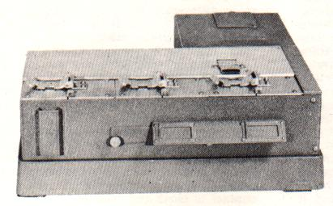
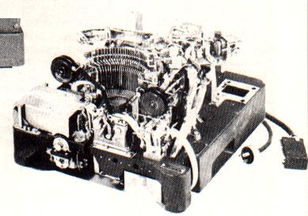
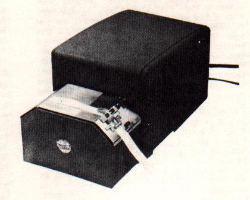
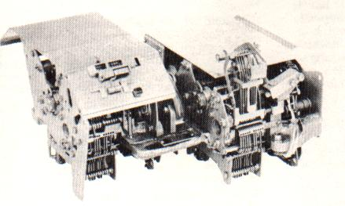
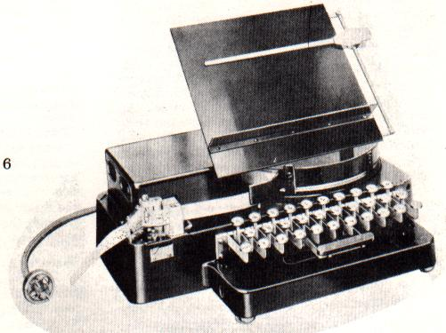
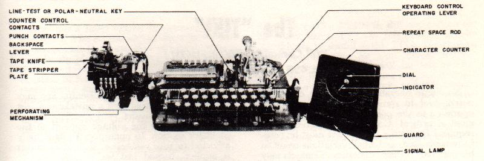
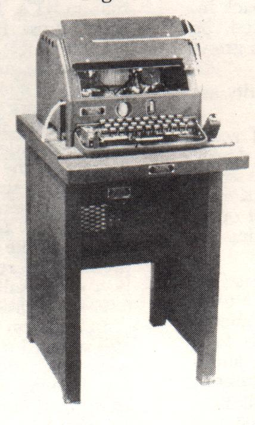
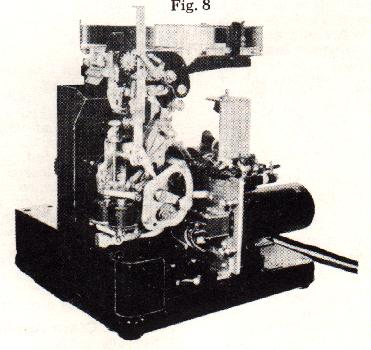

RTTY TAPE EQUIPMENT
and
TRANSMITTER DISTRIBUTERS (TD)
In reponse to many inquiries, RTTY, with permission from the
TELETYPE CORPORATION, presents this material to assist the newer
RTTYers to know what some of the others are talking about.
There are as many reasons for wanting tape gear as there are
amateurs. It provides the most rapid means of handling traffic on
amateur frequencies. It is accurate, reliable, and fast. It also
provides a means of preparing an answer while receiving another
station. This makes even the slowest typist sound like an
"old-timer". Also it can be used for bulletins of
general interest, such as the ARRL broadcast from W1AW's copy.
Equipment lists of your station (BRAG TAPES), Hi. For MARS net
and RACES net operations it can be used very effectively. Net
rosters, net call ups and so on. Its limitations are those of the
operator. Many circuits to enable cutting type from "local
loops" and from the TU have been printed in RTTY.
Tape equipment, like many other items, comes in many forms.
Fig. 1 shows the popular Model 14 Transmitter-Distributor (L4TD).
Teletype's description is given below.
DESCRIPTION OF THE TRANSMITTER DISTRIBUTOR
General
The transmitter distributor is a motor driven device
which translates code combinations, perforated in a paper tape,
into electrical impulses and transmits these impulses to one or
more receiving stations. The tape may he perforated by any one of
several models of Teletype perforating or reperforating machines.
There are two kinds of transmitter distributors; one for
transmitting five unit code, and the other for transmitting six
unit code. These two kinds are identical except that the six unit
code machine accommodates a wider tape and provides for the
transmission of an additional impulse. The following description
pertains specifically to the five unit transmitter distributor.
NOTE: In all the figures of this bulletin, end views of fixed
pivot points are designated by solid black circles.
Theoretical Transmitting Circuits
The portion of the unit through which the perforated
tape feeds is known as the transmitter The transmitter prepares
electrical paths from the signal line battery to the commutator
segments of the distributor. These paths are controlled by tape
pins which sense the perforations in the tape and thereby
determine the positions of the contact tongues with relation to
their upper and lower contact screws.
The distributor completes the connections to the signal line.
Connections are made in sequence at a constant rate of speed by
brushes which traverse the segments and the collector ring.
The Tape Sensing Mechanism
The contact levers are positioned vertically in the
transmitter. They pivot on a shaft S and have extensions to the
right C, left A, and downward B. The right-hand extensions
project upward at the ends and have tape pins embedded in them.
An opening is provided in a tape guide, located above the
right-hand extensions of the contact levers, to permit the tape
pins to enter the code holes in the tape. The left-hand extension
of each contact lever carries a contact tongue which is attached
to the contact lever by a pivotal mounting. Each contact tongue
is positioned to move between two contact screws, a spacing
contact screw above, and a marking contact screw below. A contact
lever spring is attached to the mounting end of each contact and
tends to hold it against the lower contact screw. A contact lever
bail, pivotally mounted just below contact lever lower
extensions, has an arm extending downward engaging a transmitter
operating lever. This transmitter operating lever has a central
pivot screw and moves in a horizontal plane. A roller on the rear
end of the lever rides a transmitter operating cam mounted on the
lower end of the distributor shaft. The motion imparted to the
transmitter operating lever by the operating cam causes the
contact lever bail to rotate the contact levers on their shafts
sufficiently to move the contact tongues up and down between the
marking and spacing contact screws. After the tongues strike the
upper screws, any additional clockwise rotation of the contact
levers is absorbed by the contact lever springs. When the
distributor brush comes to rest on the stop segment the
transmitter operating lever roller is on the peak of its cam,
thereby holding the tongues against the spacing contacts and also
holding the tape pins, located in the right-band extensions of
the contact levers, below the holes in the tape. As the
transmitter operating lever roller rides to the low part of its
cam, the tape pins rise. If tape perforated with code
combinations is in the tape guide at this time, the contact lever
pins will project through the tape wherever the tape is
perforated and permit the associated contact tongues to rest on
the marking contacts, while the pins will he blocked at the
unperforated portions and the associated contact tongues will he
held against the spacing contacts. The tape will be held
stationary and the contact tongues will maintain their positions
as determined by the code perforations while the distributor
brush is traversing segments one to five inclusive. The inner
distributor brush will transmit marking impulses to the line from
segments associated with tongues that rest on the lower contacts,
and spacing impulses (for polar signal transmission) from
segments associated with tongues that are on the upper contacts.
When "make-break" signal transmission is used (battery
applied only to the lower contacts), a no-current interval occurs
when the contact tongues are against the spacing contacts.
The Distributor Mechanism
The distributor is made up of two concentric conducting
rings mounted on a fiber disc. The outer ring is divided into
seven segments. Segments Nos. 1 to 5, inclusive, correspond to
the five intelligence intervals of the five unit code and are
connected to the five contact tongues
Immediately preceding No. 1 segment is the start segment. The
segment following No. 5 segment is the stop segment. The stop
segment and the lower contact screws are permanently connected to
marking line battery. The start segment and the upper contact
screws are connected to spacing line battery only when it is
desired to transmit polar signals; otherwise, the upper contact
screws and the start segment have no battery connections. When
the distributor brush passes over the start segment, a spacing
impulse is always transmitted, whereas a marking impulse always
results when the brush traverses the stop segment. These two
invariable impulses cause the receiving mechanism to operate in
unison with the distributor brush arm.
Tape Feeding Mechanism
Positioned to the rear of the contact levers and pivoted
on the contact lever shaft is a feed lever which is similar in
shape to a contact lever. The feed lever has a spring attached to
its left-hand extension and a feed pawl mounted on its right-hand
extension C. A feed pawl spring holds the feed pawl in contact
with a feed wheel ratchet. Pins on the circumference of the feed
wheel project through an opening in the tape guide and mesh with
the feed holes in the tape. A retaining lid, under which the tape
passes, holds the tape in contact with the feed wheel pins. When
the action of the contact lever bail on the contact lever moves
the tape pins downward, the feed lever responds in a similar
manner, causing the feed pawl to engage a tooth on the feed wheel
ratchet and rotate the feed wheel. With each downward motion of
the feed pawl, the tape will be advanced from right to left, the
distance required to bring the succeeding code combination over
the tape pins. The setting of the feed pawl is such that it does
not start to rotate the feed wheel until the tape pins have moved
clear of the tape. A feed wheel detent is provided to insure
alignment of the code perforations with the tape pins. The
position of the operating cam with relation to the distributor
brush is such that the contact tongues are not moved from the
lower contacts until after the brush has reached the stop
segment. While the brush is passing over the stop segment, the
tape is advanced.
Starting and Stepping Transmission
The main shaft is driven by a motor through the medium
of gears and a friction clutch. When the motor is running,
transmission is stopped by blocking the rotation of the main
shaft and started by unblocking it. This is done through the
medium of a stop arm which is under the control of a tape stop
magnet and a sprint. The magnet, when energized, holds the stop
arm clear of the lug. The spring holds the stop arm in the path
of the lug when the magnet is de-energized. The circuit to the
magnet may be opened or closed by means of the tight-tape stop
contacts, tape stop switch, or the end-of-tape stop mechanism
contacts which are described in the three paragraphs that follow.
Tight-Tape Stop Mechanism (Auto-Stop Mechanism)
When the slack in the tape between the tape perforator
and the transmitter is taken up, the tape raises the tight-tape
stop lever which opens the circuit to the tape stop magnet
allowing the stop arm to engage the lug on the stop cam. A tape
guide wire may also be employed to guide slack tape within close
proximity of the tight-tape stop lever so as to raise the lever
and stop transmission if the tape feeding into the transmitter
becomes tangled, thus preventing mutilation of the tape feed
wheel perforations.
Tape Stop Switch
Transmission can also be stopped by manually operating
the tape stop switch. This switch controls the release magnet in
a manner similar to that of the mechanism described in the
preceding paragraph.
NOTE: On some types of distributors, this switch is connected
in the motor circuit and is then used to start or stop the motor.
End-of-Tape Stop Mechanism
Another means may be provided for automatically stopping
transmission when a length of tape has passed through the
transmitter. This is accomplished by another pair of contacts
located beneath the tape guide which are operated by a pin that
projects through the tape guide When the tape retaining lid is
closed, the end-of-tape stop pin is depressed and the contacts
are held closed so long as there is tape between the pin and the
lid. When the end of the tape passes the pin, the tension of the
contact spring raises the pin and opens the contacts, stopping
transmission.
Synchronous and Governed Motors
Where regulated A.C. power is available, a synchronous
motor maybe used, otherwise governed motors must be used.
Governed motors are available for operation on either A.C. or
D.C. The speed is controlled by a centrifugal contact mechanism
having commutator rings or discs. In general, motors are mounted
directly to the base casting and the resistors and condenser used
with governed motors are mounted on the base and in the base
cavity. However, some governed motors are mounted to a base plate
having governor resistors and a condenser mounted on it so as to
form a complete motor unit assembly.
When an A.C. governed motor is used, a contact assembly is
provided which is operated by the tape stop magnet stop arm
(figure 9). The purpose of the contact assembly is to provide
better speed control by introducing a resistor in series with the
motor when the distributor shaft is rotating, and by shunting the
resistor when the load of the friction clutch is added to the
motor.
 In addition to the 14TD, many versions of the MXD
have been issued through MARS channels. Also some have been found
on the surplus market. Figure 2 shows one such unit. A
description of the MXD is given below.
Multiplex Transmitter Distributor (MXD)
The multiple transmitter distributor set is a mechanism
which, when used in combination with reperforators, provides
combined sending and receiving facilities for tape message
relaying. A complete set consists of three multiple transmitter
distributor units and a motor unit mounted on a base which is
equipped with cross shaft, gears and terminal strips. Two of
these units are message transmitters and the third is a number
transmitter. The function of the number transmitter is to insert
automatically into the signal line successive numbers, from a
number tape, which will identify each message before it is
transmitted. The number transmitter is like the message
transmitter except that it is equipped with a letter sensing
mechanism which makes it responsive to the letters combination in
the number tape causing stoppage of the number transmitter and
starting of a message transmitter through external electrical
control circuits.
The multiple transmitter distributors (message or number
transmitters) are arranged to handle either perforated or
chadless tape received from other stations on reperforators, or
prepared locally on keyboard perforators. 
The message transmitter consists essentially of the following
mechanisms: a 7.42 unit code transmitting cam cylinder with
associated transmitting contacts, a tape feed and tape sensing
mechanism, a hinged tape lid, an automatic tape out control
feature, a manual control mechanism, a magnet operated clutch, a
driven gear, and a transmitting contacts filter. (See figures 3
and 4.) This unit is geared for transmission at the speed of
368.1 o.p.m.
The transmitting cam cylinder is normally held stationary
because the clutch members on the transmitting shaft are held
disengaged by the clutch throwout lever. When the clutch magnets
are energized, the clutch members engage and the rotation of the
transmitting cam cylinder begins the cycle of operation.
The transfer of the code combination in the perforated tape to
the contact levers which control the transmitting contacts is
accomplished by means of the selector lever bail, its cam,
selector pins and selector levers.
 The selector lever bail extension roller rises from
the indent on its cam and causes the selector lever bail to move
away from the selector levers. The selector lever springs pull
the selector levers up toward the tape. The selector p ins which
encounter perforated holes in their path advance through the
perforations, but the pins which do not encounter perforations as
they come in contact with the tape, are blocked by the tape and
are prevented from advancing farther.
Each selector lever is positioned through the medium of the
perforations in the tape, to correspond with each signal impulse
to be transmitted. Each selector lever controls the motion of a
contact lever either by allowing the contact lever to close its
contact when the cams revolve, or by restricting the motion of
the contact lever. If the selector pin does not enter a
perforation in the tape, corresponding to a spacing impulse, the
lower end of the selector lever engages the associated contact
lever and prevents it from rising into an indent of the cam, as
the cam rotates, thus holding the circuit open for that impulse.
If the selector pin enters a perforation in the tape,
corresponding to a marking impulse, it does not interfere with
the movement of the contact lever. Then, as the cam revolves, the
contact lever rides on the cam periphery and drops into an
indent, thereby allowing its contact to close and send out a
marking impulse. As the cams rotate, the impulses, either marking
or spacing, are transmitted in succession.
The start-stop cam controls a contact lever which, in turn,
actuates the start-stop contacts. These contacts are opened at
the beginning of each revolution of the cam cylinder to transmit
the start impulse (spacing) and remain open during the
transmission of the five impulses. After the fifth impulse has
been transmitted, the start-stop contacts again close, sending
the stop impulse (marking) to the line.
After the fifth impulse has been transmitted, the selector
lever bail extension drops into the indent in its cam causing the
selector lever bail to retract all the selector levers from their
sensing position. At this moment the feed pawl arm roller drops
into the indent in its cam and the feed pawl engages the feed
wheel ratchet, stepping it forward, thereby advancing the tape
one character space over the selector p ins. A feed wheel detent
establishes the relative setting of the feed wheel.
The transmitting cam-cylinder rotates continuously as long as
the clutch magnets are energized. An interruption of the clutch
magnet circuit causes the clutch throwout lever to engage the
cammed surface of the driven member of the clutch due to the
action of the clutch throwout lever spring and, as the
transmitting shaft rotates, the driven clutch member is cammed
out of mesh with the driving member.
Within the unit there are two provisions for interrupting the
clutch magnet circuit. The clutch magnets are connected in series
with a set of automatically operated contacts and a set of
manually operated contacts. The opening of either set of contacts
stops the unit.
- AUTOMATICALLY OPERATED TAPE-OUT CONTACTS
- The automatic contacts are a function of the tape-out
feature. The unit has a tape-out sensing lever which
operates in unison with the other five selector levers.
The associated sensing pin is in line with and adjacent
to the sensing pin f or the first impulse. It has a
larger sensing area and a portion of it senses along the
edge of the tape during the transmission of each
character. When the end of the tape has passed through
the transmitter the tape-out sensing lever rises. Under
this condition the lower end of the tape-out sensing
lever does not interfere with the movement of its
associated tape-out operating lever and this lever, in
turn, is permitted to ride on its cam periphery. When it
drops into the cam indent, a pin on the tape-out
operating lever engages the tape-out contact lever, thus
rotating it about its pivot until at one end of the lever
the automatic contacts are opened, and on the other end,
the lever is latched by the tape-out contact lever latch.
This interruption of the clutch magnet circuit by the
opening of the automatic contacts stops the transmitter
unit and renders it inoperative.
- MANUALLY OPERATED TAPE-OUT CONTACTS -
The manually operated contacts are controlled by
depressing the release bar. The bar may be depressed
momentarily or it may be latched in the depressed
position with a slight forward pressure. Operation of the
release bar accomplishes three functions: opening of the
manual contacts to stop the transmitter, unlatching of
the tape-out contact lever thereby closing the tape-out
contact, and the disengaging of the feed wheel detent and
the feed pawl which permits the feed wheel to spin freely
to aid in the insertion or alignment of tape over the
feed pins. When the release bar is released the manual
contacts close and the transmitter operates.
The transmitter is equipped with a hinged tape lid
(figure 3) which permits the use of perforated or
chadless tape without altering its adjustments. Tape is
inserted directly under the latched lid after depressing
the release bar. For inserting tape loops, the lid may be
unlatched.
NUMBER TRANSMITTER (MXD-9)
The functions of the number and message transmitters are
identical with the exception of the letters sensing mechanism
which is a feature of the number transmitter.
Letters Sensing Mechanism
The letters sensing mechanism is used to stop the number
transmitter and to start one of the message transmitters when the
letters combination is sensed in the tape.
During every operating cycle, when the selector lever pins are
sensing the code combination in the tape, a letters operating
lever senses the ends of the five selector levers. If one or more
selector levers are in the spacing position, the letters
operating lever is prevented from continuing its travel. If the
code combination is letters (all marking impulses), the letters
operating lever is not blocked by any of the selector levers and
therefore is rotated through a larger angle. The letters
operating lever has two extensions, one of which rides on a cam
and permits the letters operating lever to sense the selector
levers, while the other engages the tape-out contact lever when a
letters combination is sensed in the tape and consequently opens
the tape-out contacts. These contacts are opened momentarily
since the tape-out contact lever is disabled in the number
transmitter. The momentary opening of these contacts causes the
number transmitter to stop and starts one of the message
transmitters by means of an external electrical control circuit.
MULTIPLE TRANSMITTER DISTRIBUTOR BASE (MXB-8)
The multiple transmitter distributor base has facilities for
mounting a motor unit and three transmitter units. The number
transmitter is mounted on the left side and the two message
transmitters are in the middle and right sides. A series governed
motor is used for operation on 115 volts D.C. or AC., 50 or 60
cycles. The motor is demountable as a complete unit and is
equipped with a governor filter.
The motor power is transmitted to the individual units through a
cross shaft. Each transmitter unit has an individual terminal
strip to facilitate disconnecting the transmitter cable to remove
the units. Underneath the base are the governor circuit elements,
a terminal block for external power connections and three sets of
spark protectors for the automatic and manual contacts on the
three transmitter units. A two-conductor power cord and an
eight-conductor cable, which terminates in plugs, provide
facilities for external connections.
A complement of covers provides dust protection. Although the
various sections of the covers are removable, a lid is provided
in the motor cover which may readily be opened to provide a view
of the speed target and access to the speed adjusting members. A
guard is provide on e cover in front of the number transmitter
through which the number tape will pass and be protected from
damage from external sources. A tape chute is provided to direct
the used tape from the unit on the right.
The front of the base is equipped with a card holder.
Another version, which incorporates a typing reperforator, is the
FRXD series. Several versions of these units have shown up
recently. A brief description is given. See Figure 3.
Reperforator Transmitter Distributor (FRXD)
General
- The Reperforator Transmitter Distributor is a motor
driven mechanism which combines in a single unit the
functions of a typing reperforator and a tape transmitter
distributor.
- The unit provides a fully automatic mechanism in which
the perforated tape may be stored in the form of a loop
to accommodate any delay in transmission, or in which all
the combinations in the tape up to and including the last
character perforated may be immediately transmitted. This
is accomplished by means of a pivoted tape transmitter
which moves along the tape, as it becomes taut, until it
reaches a position one character space (.100") away
from the point at which code perforation takes place.
Standard 11/16" wide perforator tape is used.
- The FRXD9 and FRXD1O reperforator transmitter
distributors have the same mechanical features with the
exception of the pull-bar-operated switching contacts
which are provided on the FRXD9 only.
- The reperforator transmitter distributor receives an d
retransmits signal combinations of the start-stop
five-unit code. This code utilizes five selecting
elements in combinations of current and no-current
intervals to form thirty-two code combinations. In order
to maintain synchronism between transmitting and
receiving units, each group of five selecting intervals
is preceded by a START interval and followed by a STOP
interval. Intervals during which current is transmitted
are designated as MARKING intervals and those during
which no current is transmitted are designated as SPACING
intervals.
Typing and Reperforating Mechanism General
- A method of tape perforating known as chadless
perforating is used to permit both printed and perforated
characters to occupy the same portion of the tape. The
punchings, or chads, are not completely severed from the
tape but remain attached to it at their leading edges so
as to form lids over the holes. The printed characters
are legible because the perforating does not eliminate
any portion of the tape.
- Typing and perforating occur simultaneously, but due to
the fact that the platen is to the right of the
perforator die block, characters are typed at the right
of their respective perforations. The separation between
the printed character and its associated perforation is
six character spaces. This separation must be taken into
account when tearing message tapes from the unit or in
cutting the tape. When the tape is to be used for
transmission by means of an external transmitter
distributor, the end of the tape should include all of
the printed characters in the message and the first
printed character of the message must be preceded by at
least six sets of code perforations in order to transmit
the entire message.

- When a message tape is inserted in the tape guide of an
external transmitter distributor, and the printed symbol
of the character to be transmitted is positioned opposite
the tape locating mark impressed in the tape guide, the
code perforation for that character will be over the tape
sensing pins in position for transmission. Under this
condition, if the tape retainer of the transmitter
distributor is fastened over the tape, the tape locating
mark will be covered, but the printed character will be
visible immediately to the right of the tape retainer.
Later models of the TD series used with Model 28 equipments
are shown in Figs. 4 and 5. Single and dual versions are
available for such operations.
 Several manual tape perforators are available, one
such unit is the Model 14. Fig 6. A DC supply is required to
operate the punch magnets, and "end of line" indicator
lamp.
DESCRIPTION OF THE FIVE-UNIT TAPE PERFORATOR Model 14
The Five-Unit Tape Perforator is a unit of apparatus that is
used to prepare perforated tape for automatic telegraph
transmission. Combinations of holes are perforated in the tape,
which correspond to the key lever depressed. The perforator tape
with the code combinations thus recorded may be fed automatically
through a tape transmitting device, operating a printer unit at a
distant point.
The Five-Unit Tape Perforator is a self contained magnet
(solenoid type) operated, portable unit. It consists essentially
of a set of keys and key levers; perforating, tape feeding, and
end-of-line indicating mechanisms. The unit is equipped with a
power cord and attachment plug for making connections to a source
of direct current power supply.
Signaling Code
The signaling code used to transmit characters is the
"Five-Unit Code," which consists of five selecting
impulses used in various combinations of spacing and marking
intervals. The large holes in the tape represent marking
impulses, whereas the impulse positions on the tape that are not
perforated represent spacing impulses. The small holes are feed
holes, which are used to feed the tape through the perforator and
the transmitting device.
Perforating Mechanism
The perforating mechanism consists essentially of a set
of punches for perforating the tape; a pair of punch magnets and
a punch hammer for operating the punches; a set of punch bars and
bell cranks; and loops and combs attached to each key lever used
in selecting the punches. The five punch bars are fitted in guide
slots in the punch hammer, just behind the punches and in line
with them. The right end of each punch bar is attached to a bell
crank and the opposite end of each bell crank engages a notch in
a loop extension. Each character or function key lever has a comb
with notches arranged so that its particular code combination
will be selected and perforated. The combs are cut out in such a
manner that the depression of a key will cause the comb to strike
the top edge of one or several of the loops, moving them
downward.
In addition to the five loops controlling the five punch bars,
there is a sixth or power loop which is operated by the
depression of any key. The downward movement of this loop closes
the punch contacts, energizing the punch magnet, and thus
operating the punch hammer.
The depression of a loop causes the punch bar connected to it to
be moved away from a punch so that when the punch hammer is
operated by the magnet, the tape will not be perforated at this
position; hut when a loop is not depressed, the punch bar
connected to it will be allowed to remain in the path of a punch
and a hole will be perforated. A feed hole is perforated with
each forward movement of the punch hammer.
For instance, if the "K" key lever is depressed,
only the #5 punch bar will be moved away from its punch. All the
other punch bars, however, will be driven against their punches,
causing the first four impulses to be perforated in the tape.
Tape Feeding Mechanism
The tape feed roll is located to the left of the
punches. Spaced at equal intervals around the tape feed roll is a
series of projecting feed pins which mesh with the feed holes
punched in the tape. A tape tension lever holds the tape against
the tape feed roll, keeping the feed holes in the tape in
constant mesh with the tape feed roll pins.
During the forward movement of the punch hammer, the tape feed
pawl, which is attached to the punch hammer, engages a tooth on
the tape feed roll. When the punch hammer moves back, the tape
feed roll will revolve, advancing the tape one character space. A
star wheel affixed to the lower end of the feed roll and a detent
insure equal spacing of the tape.
End-of-Line Indicating Mechanism (Nonadjustable)
The end-of-line indicating mechanism is intended for use
in connection with page printer reception. When sixty-four or
sixty-five combinations have been perforated in the tape, a red
lamp, under the keyboard, is lighted by the closing of contacts.
These contacts are closed by the action of the indicator gear.
This gear meshes, through an idler gear mounted on a lever, with
the tape feed roll pinion on the tape feed roll. Whenever the
tape feed roll moves the tape forward one space, the indicator
gear is advanced one tooth.
Mounted on the indicator gear is a pin "A". When the
indicator gear is advanced sixty-four or sixty-five teeth from
its starting position, pin "A" will move the lamp
contact ever so that its contact spring will touch the lamp
contact screw, lighting the lamp.
The advancing of the indicator gear winds up an indicator
return spring, one end of which is attached to the indicator
gear. When the operator depresses the "Carriage Return"
key, the key lever strikes a bell crank which moves the release
rod to the left. This throws the indicator idler gear out of mesh
with the tape feed roll pinion and the indicator gear is returned
to its starting position by the indicator return spring.
Since the "Carriage Return" key may not be held
depressed long enough to allow the indicator gear to completely
return to its starting position, a release rod holding pawl is
provided to insure that the gears stay out of mesh while the
indicator gear is returning. This holding p awl moves into a
notch in the release rod when the release rod is in its left-hand
position. When the indicator gear is almost returned to its
starting position, pin "B" (on the indicator gear)
moves the holding pawl out of the notch in the release rod and
permits the gears to again mesh.
End-of-Line Indicating Mechanism (Adjustable)
The adjustable end-of-line indicating mechanism is
similar to the non-adjustable end-of-line indicating mechanism
described in the foregoing.
The adjustable end-of-line indicating mechanism has an
adjustable stop plate mounted on the indicator gear. A
projection, extending downward from this stop plate, is used
instead of pin "B" to move the release rod holding pawl
out of the notch in the release rod.
The adjustable stop plate moves the release rod holding pawl
against an adjustable stop screw which determines the stop
position of the indicator gear. The adjustable stop plate may be
positioned so that the lamp contacts close on any operation from
the sixty-fourth to the seventieth.
Backspace Lever
A backspace lever is provided for moving the tape
backwards for the correction of errors. When the backspace lever
is being moved from left to right, it engages a pin projecting
from the tape feed pawl and cams the tape feed pawl out of
engagement with the tape feed roll ratchet. Toward the end of the
travel of the backspace lever, the backspace pawl (which is
mounted on the backspace lever) engages a tooth of the star
wheel, rotating it backwards one space. The "Letters"
key may then be depressed, causing five holes to be perforated
over the previous perforation. This combination may be passed
through the tape transmitting device without causing any
character or letter to be printed on the receiving printer.
However, if a character in the upper case is corrected, it will
be necessary to strike the shift key (Figures) again, because the
"Letters" combination will unshift the receiving
printer.
Repeat Mechanism
The repeat mechanism provides a means of continually
perforating a desired code combination in the tape. With any key
lever and the repeat push button simultaneously held depressed,
the code combination corresponding to the key lever depressed
will continue to be perforated until the repeat push button is
released.
When any key lever is held depressed, the punch magnet circuit
is completed through the punch magnet contacts. The operation of
the punch magnet permits the magnet yoke contacts to close,
completing a circuit through the winding of the repeat relay if
the repeat push button is depressed. The operation of the repeat
relay breaks the punch magnet circuit. The punch magnet yoke is
released, opening its contacts, which open the repeat relay
circuit. The repeat relay releases its armature, closing the
punch magnet circuit, thus setting up a repeated cycle of
operation. Repeat action will continue as long as any key lever
and the repeat push button are simultaneously held depressed.

Another manual tape perforator is the Model 15 perforator
transmitter, keyboard, which is used on the Model 19 set. Fig. 7.
It also requires an external DC supply to operate the punch
magnets.
General
The Model 15 perforator transmitter is a combination
transmitter and perforator with an electrically operated
character counter. It is inserted in the base of a Model 15
printer when the Model 15 printer is used in conjunction with a
Model 19 table and a Model 14 transmitter distributor. When this
combination of units is used together, it is known as a Model 19
printer set.
The perforator transmitter is furnished with the character
counter mounted either to the left or to the right of the unit.
When the counter is mounted to the right of the unit, a separate
cover is provided for it. When mounted to the left of the unit,
the counter is covered by an extension of the printer cover.
A manually operated, three position keyboard control operating
lever is mounted at the right-hand end of the unit. The selection
of any one of the four methods of operation may be made by
placing this operating lever and the line test key in one of the
following positions:
- OPERATING LEVER IN UPPER OR "KEYBOARD"
POSITION
Direct keyboard transmission to the line with a
printed record being produced at the transmitting point.
The maximum speed of the keyboard is limited to the
predetermined speed of the set.
- OPERATING LEVER IN MIDDLE OR "KEYBOARD AND
TAPE" POSITION
Simultaneous direct keyboard transmission to the
line and perforation of tape with a printed record being
produced at the transmitting point. The maximum speed of
the keyboard is limited to the predetermined speed of the
set.
- OPERATING LEVER IN LOWER OR "TAPE"
POSITION -Perforation of tape only, with the
associated printer either reciving messages from a
distant station, or monitoring the message perforated in
the tape as it is being transmitted to the line by a
transmitter distributor.
The character counter registers each time a character or
space key is depressed and returns to its zero position
when the "Carriage Return key is depressed.
Operation of the "Letters,"
"Figures," or "Line Feed" key levers
does not cause the character counter to register. The
counter is provided with a signal lamp to indicate when
the end of a line is being approached. The maximum speed
of the keyboard in this case is not limited to the
predetermined speed of the set and the operator may,
therefore, perforate tape at speeds much higher than the
speed at which a tape transmitter would send to the line.
- OPERATING LEVER IN MIDDLE OR "KEYBOARD AND
TAPE" POSITlON AND SET CONNECTED FOR LOCAL OPERATION
- It is also possible to perforate tape and print a home
record without transmitting directly to the line when the
set is connected for local operation. This method is
helpful in preparing perforated tape for use in
connection with printed forms. The maximum speed of the
keyboard is limited to the predetermined speed of the
set.
Signaling Code
The signaling code used to transmit characters is the
"Start-stop" five-unit code, which consists of five
selecting impulses used in various combinations of current and
nocurrent intervals. Each group of five selecting impulses is
preceded by a start impulse and followed by a stop impulse, which
are used to maintain synchronism between stations on the circuit.
Impulses which energize the selector magnets on the printer are
known as marking, and those which do not are known as spacing. 
The Model 14 Typing reperforator is shown in Fig. 8. This is
by far the typing reperf to be found in most amateur RTTY
stations who have tape equipment. Several of the typing reperf
units only, less base and cover, have been listed in the Horse
Trades section of RTTY in the past. Both type of selectors magnet
assemblies are found on these units. Hence, provision for either
20 or 60 mils can be had on the units with the holding type of
selectors, and some have the series or parallel switch which is
found mounted behind the selector unit. Some also have an
"end of line indicator" assembly which operates a lamp
after 72 or what ever number of characters it has been set for,
has been perforated. The unit shown has a keyboard, but many 14
typing reperfs have been issued by MARS which are receiving only,
in other words, no keyboard.
Another version of the 14 reperforator is shown in Fig. 9
which is called "Single Magnet Reperforator". It also
is made in a six level tape version, which has been used on the
TELETYPESETTER, in news service.
DESCRIPTION OF THE SINGLE MAGNET REPERFORATOR 14 AND 20 TYPE
There are two types of Teletype single magnet reperforators;
the 20 type, which operates on the six-unit code and the 14 type
which operates on the five-unit code. This bulletin mainly covers
the 20 type six unit reperforator. However, the mechanical parts
of the 14 type reperforator are the same as the 20 type except
the parts associated with the zero pulse are not used, such as
the zero selector lever, sword, "T" lever, transfer
lever, and punch lever. Also, different range scales, punch
blocks, selector cams, feed rolls and guides are used on the five
unit reperforators. 
The Teletype reperforators are motor driven tape reperforating
machines which receive electrically transmitted signals and
translate these signals, through the medium of selecting and
perforating mechanism into code combinations of holes in a paper
tape. This tape may then be used for retransmitting these code
combinations on other similar printing telegraph circuits; thus
eliminating manual preparation of tape with a perforator at the
relaying station.
Signaling Code
The signaling code used for the 20 type single magnet
reperforator is a six unit start-stop code which consists of six
selecting impulses used in various combinations of current and
no-current intervals. Each group of six selecting impulses is
preceded by a start impulse and followed by a stop impulse to
maintain unison between the sending and receiving apparatus.
Impulses which operate the selector magnets are known as marking
and those which do not operate the selector magnets are known as
spacing. Figure 1 shows graphically the six unit code.
The signaling code used for the 14 type single magnet
reperforator is the same as the six unit code except that the
zero impulse is omitted.
RTTY is indebted to the TELETYPE CORPORATION for permission to
reprint portions of this material. Their current equipment is
being widely used for TWX service (MTWX) and also in association
with many computers. An example of such advanced equipment is the
Model 33 ASR which was shown on the cover of the July 1963 RTTY.
If your non-hobby needs are for such equipments, write to them
at:
TELETYPE CORPORATION
5555 Touhy Avenue
Skokie, Illinois
|